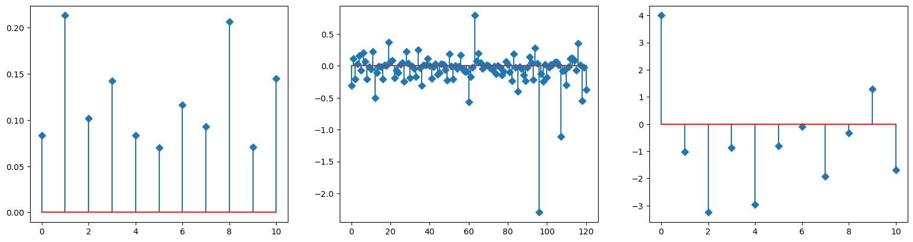

[2]:
from mimic.utilities.utilities import set_all_seeds
from mimic.utilities.utilities import plot_gLV
from mimic.utilities import *
from mimic.model_infer.infer_gLV_bayes import *
from mimic.model_infer import *
from mimic.model_simulate import *
import numpy as np
import matplotlib.pyplot as plt
from scipy.integrate import odeint
import pandas as pd
import seaborn as sns
Repeat Stein et al. 2013 analysis¶
https://journals.plos.org/ploscompbiol/article?id=10.1371/journal.pcbi.1003388
[3]:
nsp = 11
npert = 1
# read in
F = pd.read_csv('Stein_example_F.csv', delimiter=',')
X = pd.read_csv('Stein_example_Y.csv', delimiter=',')
# print(F)
# print(X)
F = F.drop(F.columns[[0, 1]], axis=1)
X = X.drop(X.columns[[0, 1]], axis=1)
colnames = F.columns.to_list()
# print(F.shape)
# print(X.shape)
# get the best lambda/alpha values on a grid via cross validation
a0, a1, a2 = fit_alpha_Ridge2(X.to_numpy(), F.to_numpy(
), num_species=nsp, num_pert=npert, n_a0=10, n_a1=10, n_a2=10)
# do final fit
mu_h, M_h, e_h = do_final_fit_Ridge2(X.to_numpy(), F.to_numpy(
), num_species=nsp, num_pert=npert, a0=a0, a1=a1, a2=a2)
predictor = sim_gMLV(num_species=nsp,
num_metabolites=0,
M=M_h,
mu=mu_h,
epsilon=e_h)
plot_params(mu_h, M_h, e_h, nsp)
# plot interaction matrix
plt.figure(figsize=(6.4*2, 6.4*2))
lims = np.max([np.max(M_h), np.abs(np.min(M_h))])
sns.heatmap(M_h, xticklabels=colnames, yticklabels=colnames, square=True,
vmin=-lims, vmax=lims, annot=True, fmt=".2f", cmap='coolwarm', cbar_kws={"shrink": 0.5})
minimum found: a0/a1/a2/error: 10.0 100.0 1e-06 1.4615329563004673
unconstrained error : 1.6261046781774224
inferred params:
mu_hat/mu:
[0.0832295 0.21323277 0.10158073 0.14229075 0.08336531 0.07006605
0.1166006 0.09275261 0.20685994 0.07064437 0.14474325]
M_hat/M:
[[-0.31 0.12 -0.21 0.03 0.16 -0.07 0.21 0.07 -0.2 -0.01 -0.05]
[ 0.22 -0.5 -0.11 -0.01 -0.02 -0.21 0.01 0.01 0.37 0.07 0.08]
[-0.19 -0.07 -0.1 0.02 0.05 -0.24 0.22 0.04 -0.19 -0. -0.04]
[-0.17 0.25 -0.04 -0.31 0.01 0.02 0.12 0. -0.2 -0.02 0.03]
[-0.14 -0.11 0.03 0.02 -0.06 -0.23 0.19 -0.01 -0.21 -0. -0.04]
[-0.01 0.17 -0.05 -0.09 -0.09 -0.57 -0.17 -0.03 0.79 0.07 0.19]
[ 0.05 -0.05 -0.02 0.02 0. -0.03 -0.06 -0. -0.13 -0. -0.03]
[-0.15 -0.09 0.07 0.02 -0.1 -0.24 0.19 -0.02 -0.4 -0.01 -0.04]
[-0.14 -0.24 -0.02 0.14 0.05 -0.22 0.28 0.04 -2.3 -0.13 -0.24]
[ 0.02 -0.18 -0.02 0.02 0.02 0.06 0.06 0.02 -1.11 -0.08 -0.08]
[-0.3 -0.02 0.11 0.12 0.09 -0.07 0.35 0.02 -0.55 -0.03 -0.37]]
e_hat/e:
[[ 3.99329576]
[-1.01892107]
[-3.2511057 ]
[-0.87839567]
[-2.96669764]
[-0.81307176]
[-0.09653843]
[-1.9333499 ]
[-0.32663228]
[ 1.28817601]
[-1.69146712]]
[3]:
<Axes: >

[ ]: